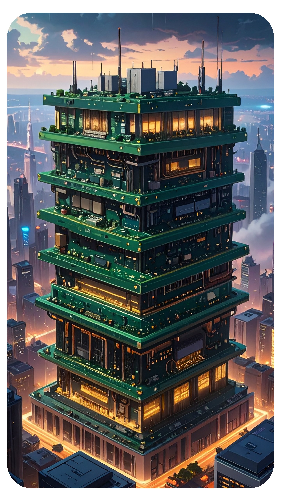
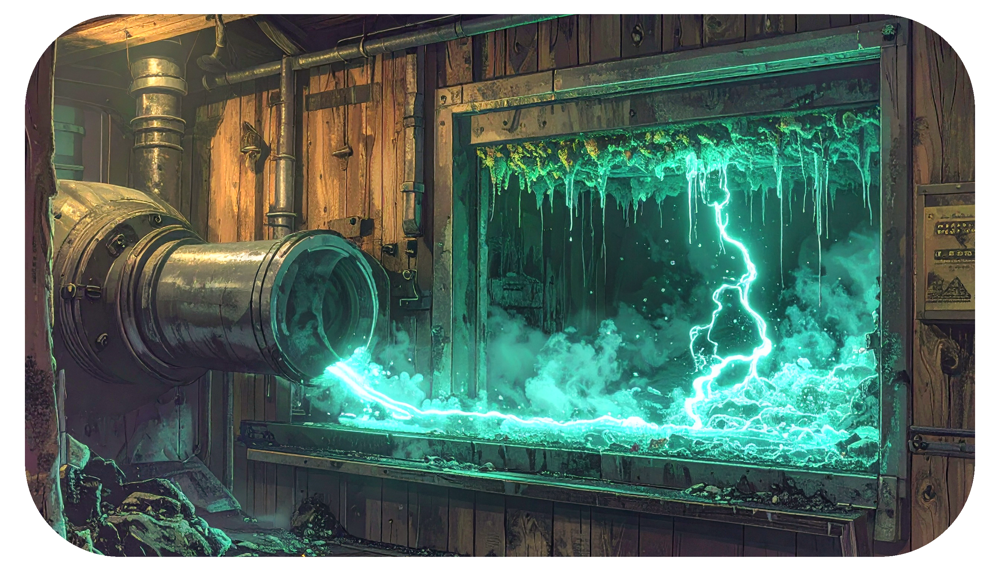
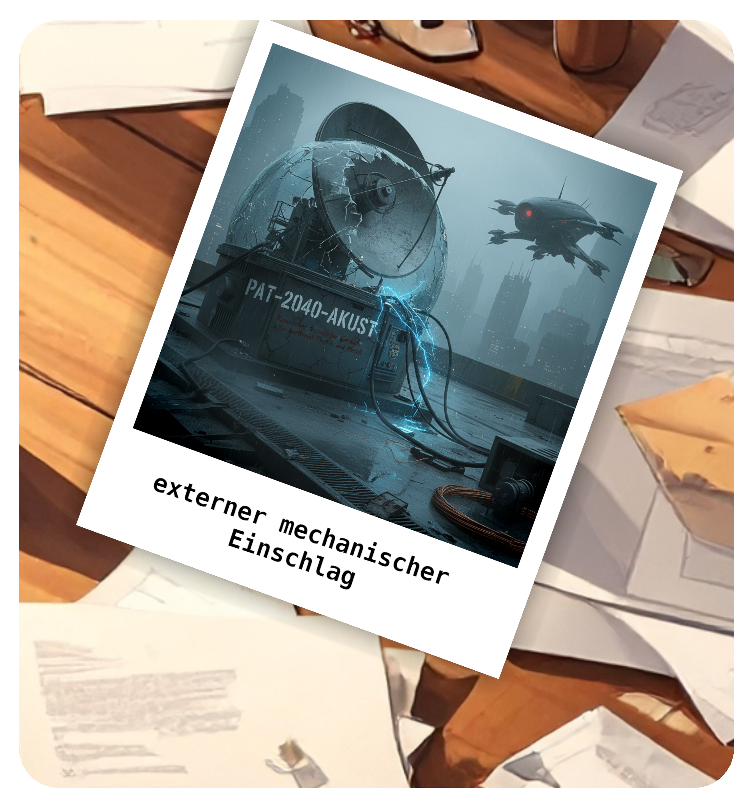

Als technischer Autor nutze ich die inimitable temptation der Worte als Bildmaschine.
Die Wahrheit ist keine Vermutung, sondern eine traumatische Anomalie. Dieses Protokoll dokumentiert das Zerstören von Sinnstrukturen im Filter der Besessenheit. Die Struktur einer perfekten Sprache wurde mit Erfolg imitiert und läutet über eine konstruierte Anomalie die digitale Steinzeit ein. Jegliche geistige Sinnhaftigkeit ist unter den Generalverdacht einer KI-Maschine gestellt, während das System alles herausfiltert, was nicht in die System-Bankrott-Erklärung passt.
Klicke auf ein Bild oder nutze das Pinterest-Icon, um die visuellen Impressionen zu diesem Werk zu merken.


